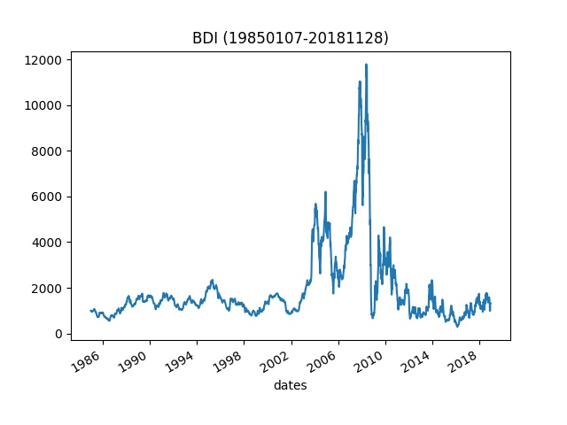

2018年11月30日BDI指数报1231点，较前一交易日下跌50点
搜航网消息，2018年11月30日BDI指数报1231点，较前一交易日下跌50点。

11月30日波罗的海海岬型船运价指数(BCI)报1755点，较前一交易日下跌195点(11.11%)。连续下跌3日，累计23.20%。海岬型船平均租金水平(CAPESIZE)报13816美元/天，较上一交易日下跌1292美元(9.35%)。连续下跌3日，累计21.70%。该型船舶吨位在8万吨以上，主运货物为焦煤、燃煤、铁矿砂、磷矿石、铝矾土等工业原料。

11月30日波罗的海巴拿马型船运价指数(BPI)报1463点，较前一交易日上涨8点(0.55%)。连续上涨5日，累计6.31%。巴拿马型平均租金水平(PANAMAX)报11694美元/天，较上一交易日上涨58美元(0.50%)。连续上涨5日，累计6.34%。该型船舶吨位为5~8万吨，运货物为民生物资及谷物等大宗物资。

11月30日波罗的海灵便型船运价指数(BHSI)报626点，较前一交易日下跌2点(0.32%)。连续下跌23日，累计7.26%。灵便型船平均租金水平(HANDYSIZE)报9043美元/天，较上一交易日下跌19美元(0.21%)。连续下跌26日，累计7.46%。该型船舶吨位通常在4~5吨。

11月30日波罗的海超灵便型船运价指数(BSI)报944点，较前一交易日下跌1点(0.11%)。连续下跌1日，累计0.11%。超灵便型船平均租金水平(SUPRAMAX)报10915美元/天，较上一交易日上涨7美元(0.06%)。连续上涨2日，累计0.40%。该型船舶吨位通常在4吨以下。

关于BDI
BDI全称波罗的海综合运价指数(Baltic Dry Index)，由几条主要航线的即期运费加权计算而成BDI由伦敦波罗的海交易所（Baltic Exchange）发布，历史可追溯至1744年伦敦金融区的弗吉尼亚和巴尔蒂克咖啡馆。 每个工作日，交易所都会向世界各地的经纪人询问各个航运线路的预定价格。指数变量包含诸如船的类型和速度以及航程的变量。

BDI的价值
BDI提供了“对海上主要原材料运输价格的评估”，反映的是即期市场的行情，它为高度不透明和分散的航运市场以及全球贸易量的准确晴雨表提供了一个难得的窗口。
与股票和债券市场不同，BDI“完全没有投机内容，”除非货物有移动，否则人们不会预订货机。
BDI可以作为是经济和生产的领先指标。由于它不涉及装运成品的集装箱船。它涉及生产的原料：承载建筑材料，水泥，谷物，煤和铁的散货船。波罗的海指数的走势往往先于全球股市的走势。但该指数也倾向于预示更高的利率。当更多的东西被运往世界各地时，它需要得到资助。这创造了更大的信贷需求。